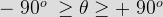
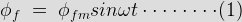
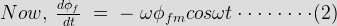
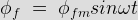
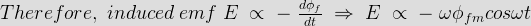

• Alternator at Unity Power Factor
• Alternator at Lagging Zero Power Factor
• Alternator at Leading Power Factor
Every rotating electrical machine works based on Faraday's law. Every electrical machine requires a magnetic field and a coil (Known as armature) with a relative motion between them. In case of an alternator, we supply electricity to pole to produce magnetic field and output power is taken from the armature. Due to relative motion between field and armature, the conductor of armatures cut the flux of magnetic field and hence there would be changing flux linkage with these armature conductor. According to Faraday's law of electromagnetic induction there would be an emf induced in the armature. Thus, as soon as the load is connected with armature terminals, there is an electric current flowing in the armature coil. As soon as electric current starts flowing through the armature conductor there is one reverse effect of this electric current on the main field flux of the alternator (or synchronous generator). This reverse effect is referred as armature reaction in alternator or synchronous generator.
We already know that a electric current carrying conductor produces its own magnetic field, and this magnetic field affects the main magnetic field of the alternator.
It has two undesirable effects, either it distorts the main field or it reduces the main field flux or both. They deteriorate the performance of the machine. When the field gets distorted, it is known as cross magnetizing effect. and when the field flux gets reduced, it is known as demagnetizing effect.
The electromechanical energy conversion takes place through magnetic field as a medium. Due to relative motion between armature conductors and the main field, an emf is induced in the armature windings whose magnitude depends upon the relative speed and as well as the magnetic flux. Due to armature reaction, flux is reduced or distorted, the net emf induced is also affected and hence the performance of the machine degrades.
Armature Reaction in Alternator
In an alternator like all other synchronous machines, the effect of armature reaction depends on the power factor i.e the phase relationship between the terminal voltage and armature current.
Reactive power (lagging) is the magnetic field energy, so if the generator supplies a lagging load, this implies that it is supplying magnetic energy to the load. Since this power comes from excitation of synchronous machine, the net reactive power gets reduced in the generator. Hence, the armature reaction is demagnetizing in nature. Similarly, the armature reaction has magnetizing effect when the generator supplies a leading load (as leading load takes the leading VAR ) and in return gives lagging VAR (magnetic energy)to the generator. In case of purely resistive load, the armature reaction is cross magnetizing only.
Let's discuss in details
The armature reaction of alternator or synchronous generator, depends upon the phase angle between, stator armature electric current and induced voltage across the armature winding of alternator.
The phase difference between these two quantities, i.e. Armature electric current and voltage may vary from - 90° to + 90°
If this angle is θ, then,

To understand actual effect of this angle on armature reaction of alternator, we will consider three standard cases,
1) When θ = 0
2) When θ = 90°
3) When θ = - 90°
Armature Reaction of Alternator at Unity Power Factor
At unity power factor, the angle between armature electric current I and induced emf E, is zero. That means, armature electric current and induced emf are in same phase. But we know theoretically that emf induced in the armature is due to changing main field flux, linked with the armature conductor.
As field is excited by DC, the main field flux is constant in respect to field magnets, but it would be alternating in respect of armature as there is a relative motion between field and armature in alternator. If main field flux of the alternator in respect of armature can be represented as

Then induced emf E across the armature is proportional to, dφf/dt.

Hence, from this above equations (1) and (2) it is clear that, the angle between, &phif and induced emf E will be 90°.
Now, armature flux φa is proportional to armature electric current I. Hence, armature flux φa is in phase with armature electric current I.
Again at unity electrical power factor I and E are in same phase. So at unity pf, φa is phase with E. So at this condition, armature flux is in phase with induced emf E and field flux is in quadrature with E. Hence, armature flux φa is in quadrature with main field flux φf.
As this two fluxes are perpendicular to each other, the armature reaction of alternator at unity power factor is purely distorting or cross-magnetizing type.
As the armature flux pushes the main field flux perpendicularly, distribution of main field flux under a pole face does not remain uniformly distributed. The flux density under the trailing pole tips increases somewhat while under the leading pole tips it decreases.
Armature Reaction of Alternator at Lagging Zero Power Factor
At lagging zero electrical power factor, the armature electric current lags by 90° to induced emf in the armature.
As the emf induced in the armature coil due to main field flux. The emf leads the main field flux by 90°. From equation (1) we get, the field flux,


Hence, at ωt = 0, E is maximum and φf is zero.
At ωt = 90°, E is zero and φf has maximum value.
At ωt = 180°, E is maximum and φf zero.
At ωt = 270°, E is zero and φf has negative maximum value.
Here, φf got maximum value 90° before E. Hence φf leads E by 90°.
Now, armature electric current I is proportional to armature flux φa, and I lags E by 90°. Hence, φa lags E by 90°.
So, it can be concluded that, field flux φf leads E by 90°.
Therefore, armature flux and field flux act directly opposite to each other. Thus, armature reaction of alternator at lagging zero power factor is purely demagnetizing type. That means, armature flux directly weakens main field flux.
Armature Reaction of Alternator at Leading Power Factor
At leading power factor condition, armature electric current I leads induced emf E by an angle 90°. Again, we have shown just, field flux φf leads, induced emf E by 90°.
Again, armature flux φa is proportional to armature electric current I. Hence, φa is in phase with I. Hence, armature flux φa also leads E, by 90° as I leads E by 90°.
As in this case both armature flux and field flux lead induced emf E by 90°, it can be said, field flux and armature flux are in same direction. Hence, the resultant flux is simply arithmetic sum of field flux and armature flux. Hence, at last it can be said that, armature reaction of alternator due to a purely leading electrical power factor is totally magnetizing type.
 by
by